SYNTH CITY
The future didn't run out of diamonds. It ran out of rarity.
An alternate-future campaign for Premier Gem. Six cinematic films, a government-controlled broadcast network and interactive experiences exploring a world where everything can be manufactured. Except rarity. Soft-launched in 2026; the full rollout is in development.
The insight
The insight
We can manufacture more diamonds than ever.
But what happens to the meaning of something special when everything can be made again?
The idea
Welcome to 2187.
Diamonds are produced by the ton. Engagement rings come from vending machines. Even love is available on demand.
Everything is perfect.
Nothing is rare.
The world
Welcome to the perfect future. In 2187, diamonds are unlimited, happiness is optimized and authenticity has become an inconvenience.

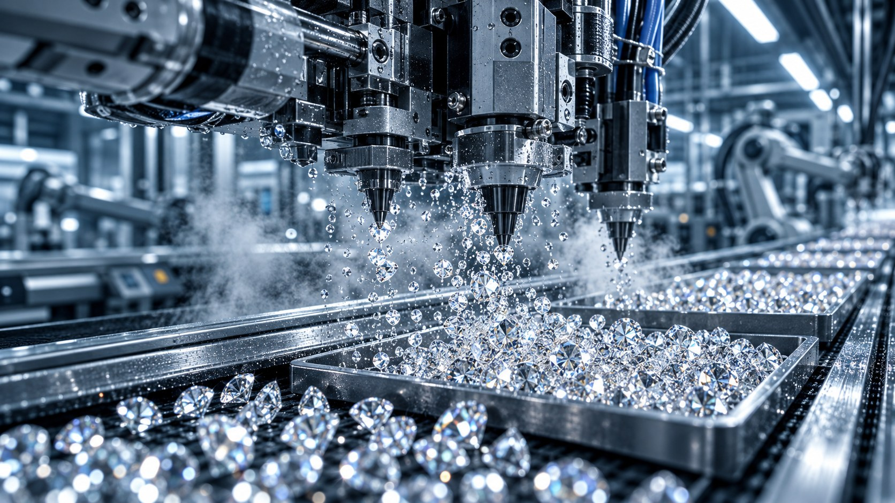


The campaign
Every piece hands off to the next. A viewer can enter anywhere; the path always ends with something real.
- The films
- synthcity.tv
- Rarity Detector
- Synth-Mate Lab
- The transmission
- Premier Gem
The Synthetic Bureau
It controls the story.
The machinery of a society devoted to manufactured perfection: a news network, public broadcasts and one message repeated until it sticks. Synthetic is better.


The Rarity Detector
It erases the original.
The Bureau's official classification utility, and a working AI tool. Point it at anything and it rates how rare that object will be in Cycle 2187. Legacy objects come back obsolete. Natural stones come back as anomalies.
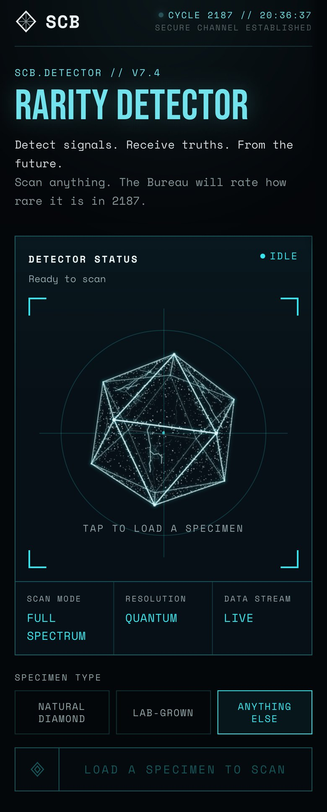
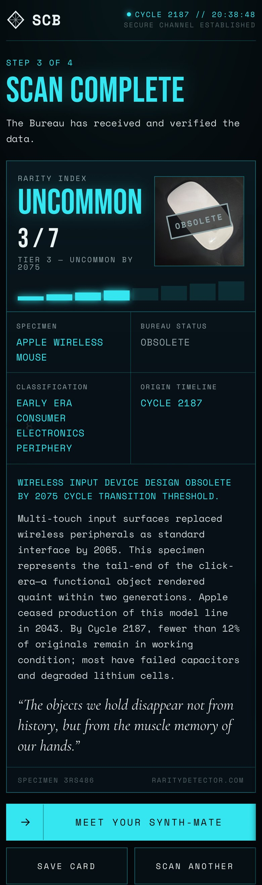
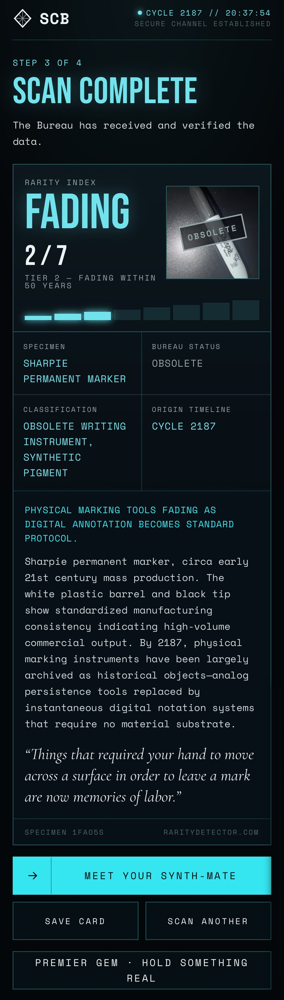
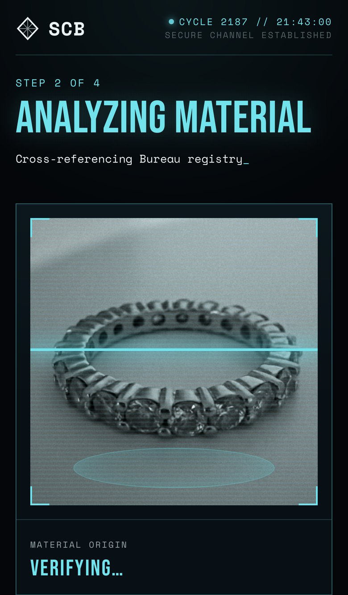
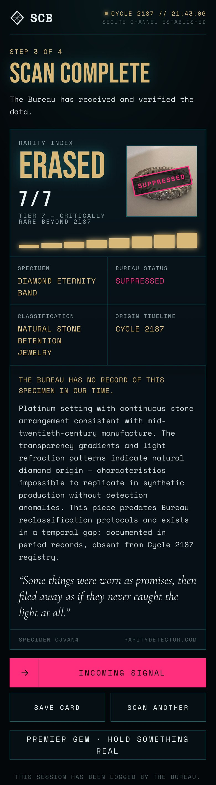
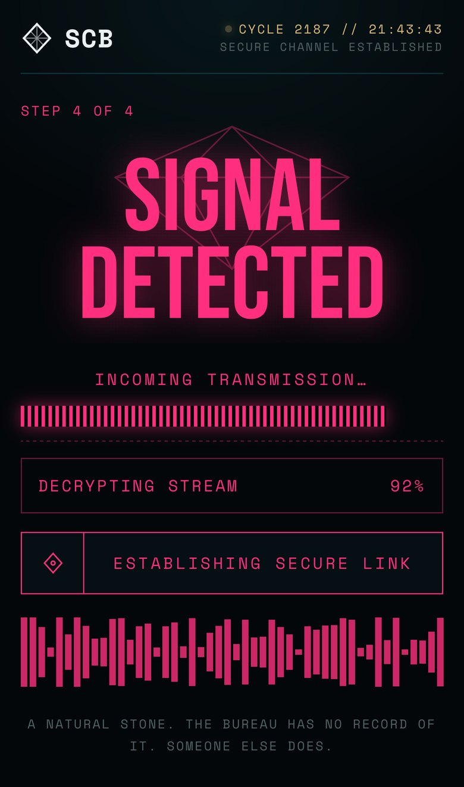
SCB.DETECTOR // Example scans
The Bureau's utility for Cycle 2187. Load any object and it rates how rare that object will be.
Scroll inside the phone to read a full result.
A fictional classification for the story, not a scientific method of verifying a diamond's origin.
Synth-Mates
It replaces love.
If diamonds can be manufactured, why stop there? The Bureau now manufactures the people we fall in love with, then sells them like a 1950s dream.
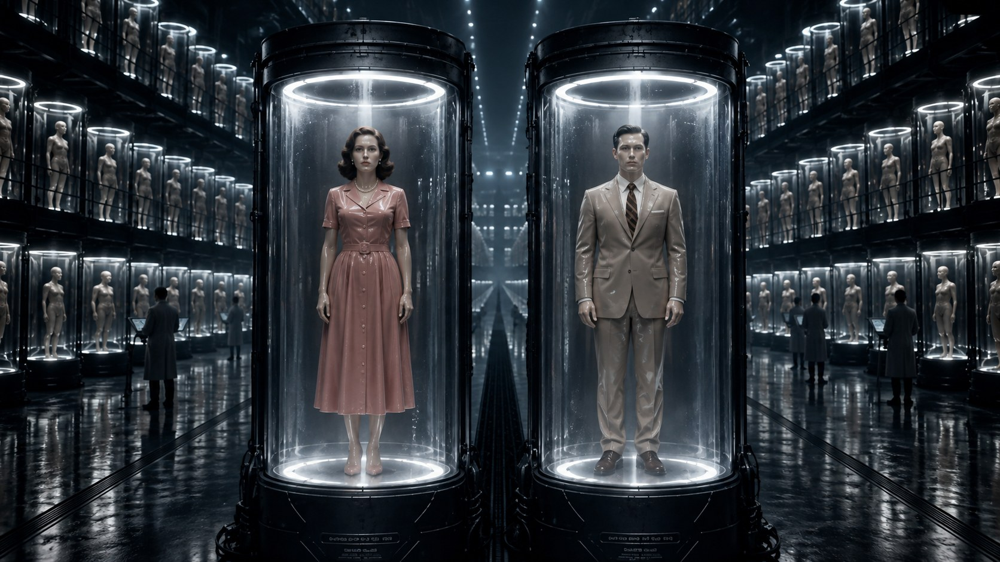
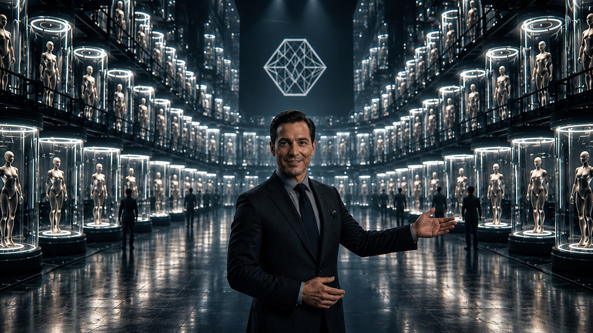
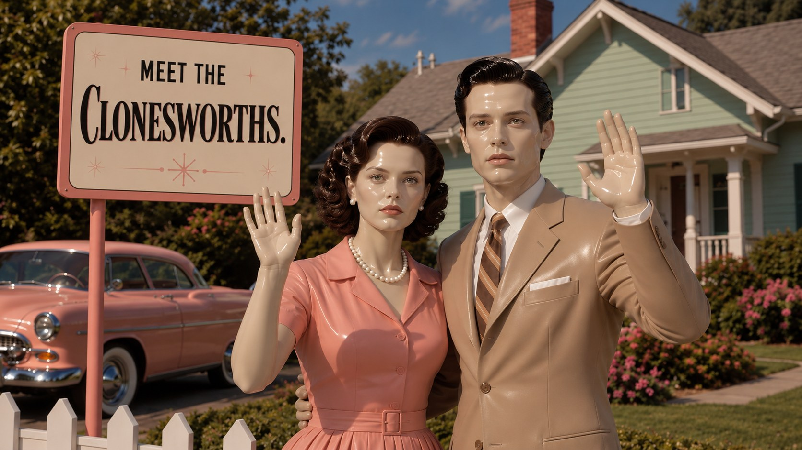


File K-9. The last transmission.
The Bureau promised a world without rarity. Then an unauthorized transmission interrupted the network. Deep beneath the Kalahari Basin, a lone geologist had discovered something that wasn't supposed to exist.
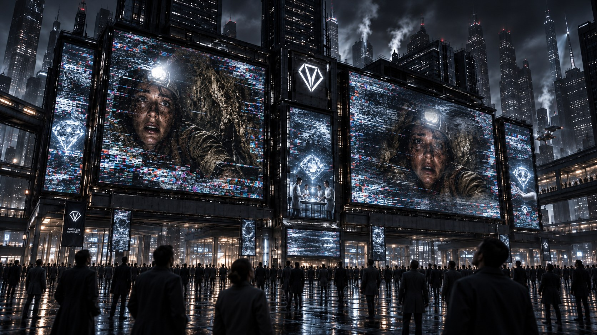
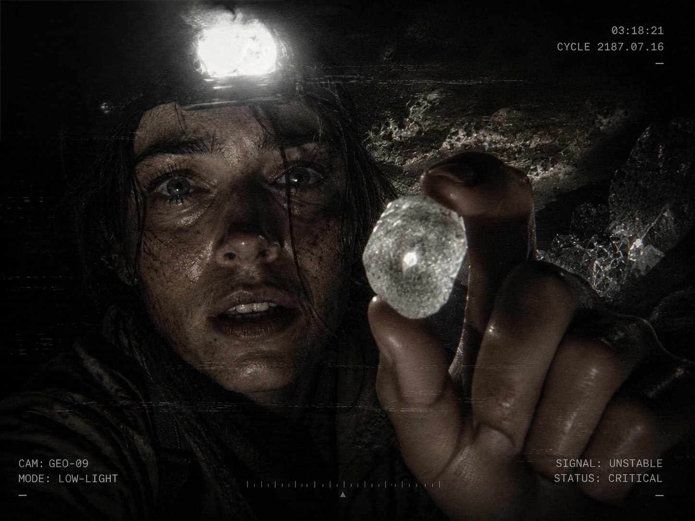
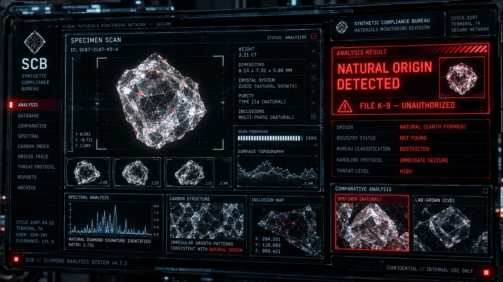
Optional · intercepted from 2187
Answer the transmission
The campaign's live site opens on an incoming call. A recorded voice, not a live person. Answer it if you like.
Tap Accept, sound on.
In a world with billions of diamonds, one was worth stopping for.

Back to now

Synthetic diamonds. Synthetic love. Synthetic everything.
The future didn't run out of diamonds.
It ran out of rarity.
Premier Gem
Celebrate what can't be replicated.